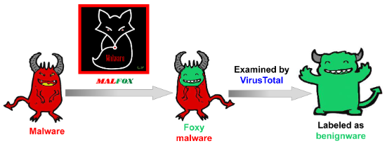
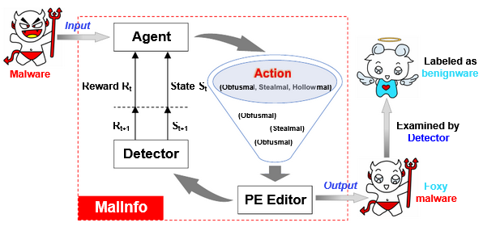
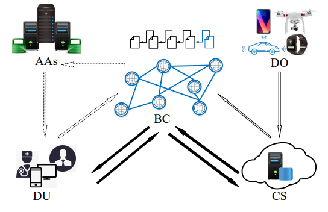
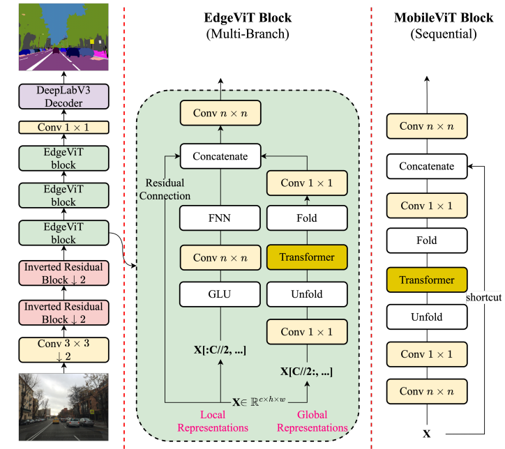
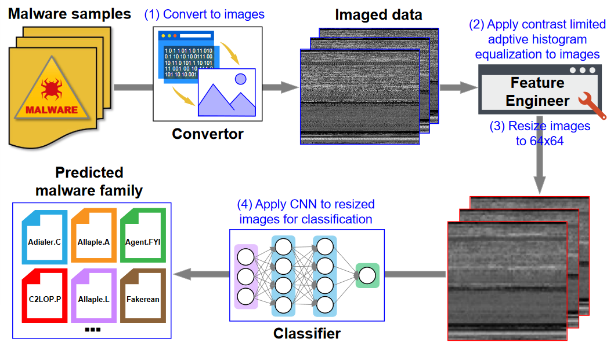
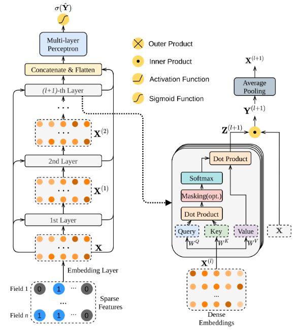
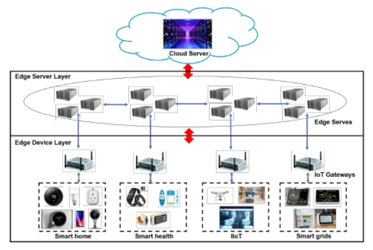

I am a computer security researcher working on software security.
Bio: Dr. Fangtian Zhong is an assistant professor at Montana State University . He received a Ph.D. in Computer Science from George Washington University in 2021. Since then, he worked as a postdoctoral scholar at Pennsylvania State University and University of Notre Dame. His research primarily focuses on software security, program analysis, and machine learning for cybersecurity. He has published two ESI 1% highly cited papers. He enjoys developing novel and beautiful solutions to software security issues in different architectures, especially native codes without a source. He is a recipient of Graduate Fellowship and Graduate Merit Award at GWU. Outside of work, he likes exploring outdoor sports and playing CTF or DEFCON.
PhD openings: I am looking for multiple self-motivated PhD students starting in 2024 Fall (deadline by January 2024). Students with strong security background are preferred (e.g., could you explain static analysis, dynamic analysis, cfg, cg, reverse engineering, intermediate language?). If you are a prospective PhD student, I highly suggest reaching out to me early so that we can both check if there is a fit between us.
For any inquiries, feel free to reach out to me via email!
Photo by Dr.Liping

@InProceedings{zhongmalfox,
author = {Fangtian Zhong and Xiuzhen Cheng and Dongxiao Yu and Bei Gong and Shuaiwen Song and Jiguo Yu},
title = {MalFox: Camouflaged Adversarial Malware Example Generation Based on Conv-GANs Against Black-Box Detectors},
booktitle = {IEEE Transactions on Computers},
year = {2023},
}
@InProceedings{zhongmalinfo,
author = {Fangtian Zhong and Pengfei Hu and Guoming Zhang and Hong Li and Xiuzhen Cheng},
title = {Reinforcement learning based adversarial malware example generation against black-box detectors},
booktitle = {Computers & Security},
year = {2022},
}
@InProceedings{zhongciot,
author = {Jiguo Yu and Suhui Liu and Minghui Xu and Hechuan Guo and Fangtian Zhong and Wei Cheng},
title = {An Efficient Revocable and Searchable MA-ABE Scheme with Blockchain assistance for C-IoT},
booktitle = {IEEE Internet of Things Journal},
year = {2022},
}
@InProceedings{zhongedgevit,
author = {Zekai Chen and Fangtian Zhong and Qi Luo and Xiao Zhang and Yanwei Zheng},
title = {EdgeViT: Efficient Visual Modeling for Edge Computing},
booktitle = {International Conference on Wireless Algorithm, Systems, and Applications},
year = {2022},
}
@InProceedings{zhongvismal,
author = {Fangtian Zhong and Zekai Chen and Minghui Xu and Guoming Zhang and Dongxiao Yu and Xiuzhen Cheng},
title = {Malware-on-the-Brain: Illuminating Malware Byte Codes with Images for Malware Classification},
booktitle = {IEEE Transactions on Computers},
year = {2022},
}
@InProceedings{zhongdcap,
author = {Zekai Chen and Fangtian Zhong and Zhumin Chen and Xiao Zhang and Robert Pless and Xiuzhen Cheng},
title = {DCAP: Deep Cross Attentional Product Network for User Response Prediction},
booktitle = {Proceedings of the 30th ACM International Conference on Information and Knowledge Management (CIKM ' 21)},
year = {2021},
}
@InProceedings{zhongflowguard,
author = {Yizhen Jia and Fangtian* Zhong and Arwa Alrawais and Bei Gong and Xiuzhen Cheng},
title = {Flowguard: An intelligent edge defense mechanism against IoT DDoS attacks},
booktitle = {IEEE Internet of Things Journal},
year = {2020},
}@InProceedings{zhongre,
author = {Yizhen Jia and Fangtian* Zhong and Arwa Alrawais and Bei Gong and Xiuzhen Cheng},
title = {Polymorphic virus deformation characteristics in the application of encryption},
booktitle = {2016 2nd International Conference on Materials Engineering and Information Technology Applications (MEITA 2016)},
year = {2017},
}